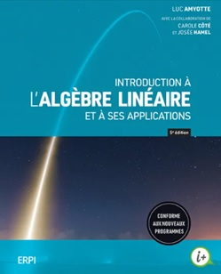

Plan de cours 8MAT142
Titre : Algèbre vectorielle et matricielle
Information sur le cours
| Département d’informatique et de mathématique |
| Trimestre: | hiver 2025 |
| Groupe: | 02 |
| Périodes et ateliers : | mardi 13h00 à 15h45 (P1-1020), jeudi 8h00 à 10h45 (P1-7000) |
| Chargé de cours : | Patrice Guérin |
| Courriel : | pguerin@uqac.ca |
|


|
Raccourcis:
Contenu général
Détail des cours
Évaluation
Bibliographie
|
Contenu général :
Familiariser l'étudiant avec les notions de base d'algèbre vectorielle et matricielle.
Vecteurs géométriques: définition, addition, produit par un scalaire, combinaison linéaire de vecteurs parallèles et coplanaires, composantes d'un vecteur. Vecteurs algébriques: définition, opération sur ces vecteurs. Produit scalaire et applications. Produit vectoriel et applications. Le plan dans l'espace: équations vectorielle et algébrique du plan, vecteur normal à un plan, équation normale, angle de deux plans, distance entre deux plans parallèles, distance d'un point à un plan, équations paramétriques pour un plan.
La droite dans l'espace: équations paramétriques et symétriques, droite d'intersection de deux plans non parallèles, distance d'un point à une droite, angle de deux droites, angle d'un plan et d'une droite, point d'une droite le plus rapproché d'un point donné, intersection d'une droite et d'un plan.
Matrices: élément, format, addition, produit par un scalaire, produit des matrices, transposées, déterminants et calculs, inversions de matrices, matrices symétriques et orthogonales, valeurs et vecteurs propres, matrices diagonalisables. Systèmes d'équations linéaires: expression vectorielle et matricielle d'un système linéaire, matrice augmentée, méthode de Gauss.
Notions de nombres et variables complexes: définition et justification des nombres complexes, représentation sur le plan complexe, formes polaire et cartésienne, égalité, inversion et conjugués. Addition, soustraction. Forme exponentielle. Multiplication et division. Racine. Fonctions d'une variable complexe: fonctions exponentielles et sinusoïdales.
Formule pédagogique
Les cours seront dispensés en classe par un professeur. La plupart des concepts seront présentés sous deux formes : par l'enseignant au tableau et dans le livre obligatoire. Des exercices individuels et des travaux d’équipes viendront fortifier les apprentissages des étudiants.
Il y aura deux séances hebdomadaires de 1h15 de travaux pratiques associées à ce cours, encadré par un laborantin.
Dans la mesure du possible, la pondération du cours (3-3-3) sera respectée. Il peut arriver que certaines personnes aient besoin de plus de temps pour acquérir les compétences.
Le niveau d’utilisation des technologies de l'information et de la communication (TIC) permis est : «usage interdit » durant les cours. L'utilisation des TIC pour référence (exercices, corrigés, etc.) est encouragée durant les ateliers. L'utilisation d'une calculatrice scientifique est permise mais ne sera pas enseignée en classe.
Détail des cours:
Évaluation :
| • Exigences : |
|
- La note de passage est fixée à 60% ou D.
- Vingt pourcent (20%) de l’évaluation aura été transmise à l’étudiant
avant la date limite d’abandon sans mention d’échec, soit le vendredi
14 mars 2025.
- Tout travail remis doit être remis dans les délais impartis
par le professeur. En conséquence, tout travail remis en
retard sans motif valable sera pénalisé de 10% plus 10% par jour de retard.
|
| • Laboratoires :
|
|
- Valeur : 21%
- Quelques (de 3 à 6) laboratoires seront ramassés en cours de trimestre.
|
| • Examen |
|
- Examen 1 : 20%
- Examen 2 : 29%
- Examen 3 : 30%
|
Bibliographie :
- AMYOTTE, LUC. Introduction à l’algèbre linéaire et à ses applications, 5e édition, Saint-Laurent, ERPI, 2024

- ANTON, Howard, et Chris RORRES. Algèbre linéaire et géométrie vectorielle, Mississauga, John Wiley & Sons Canada, Inc., 2006, 420 p.
- CHARRON, Gilles, et Pierre PARENT. Algèbre linéaire et géométrie vectorielle, 4e édition, Montréal, Beauchemin, 2011, 556 p.
- OUELLET, Gilles. Algèbre linéaire : vecteurs et géométrie, 2e édition, Sainte-Foy, Les Éditions Le Griffon d'argile, 2002, 528 p.
- PAPILLON, Vincent. Vecteurs, matrices et nombres complexes, 2e édition, Mont-Royal, Modulo Éditeur, 2012, 387 p.
- ROSS, André. Algèbre linéaire et géométrie vectorielle. Applications en sciences humaines, Mont-Royal Modulo Éditeur, 2012, 417 p.